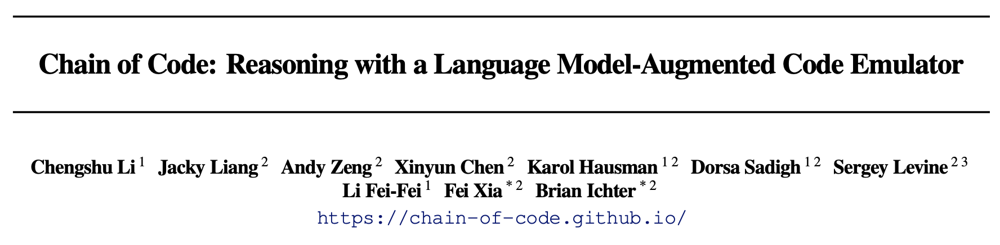
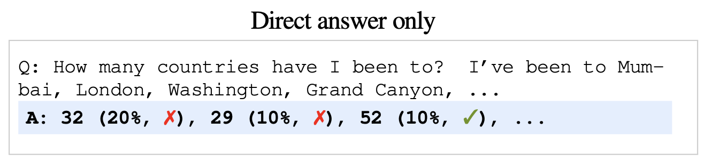
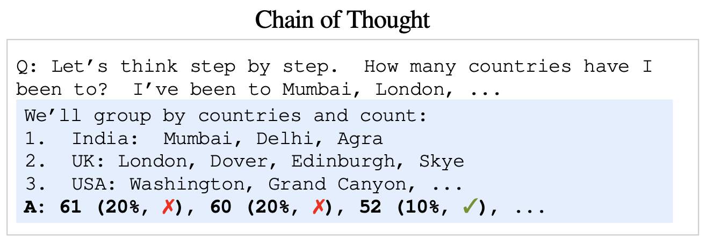
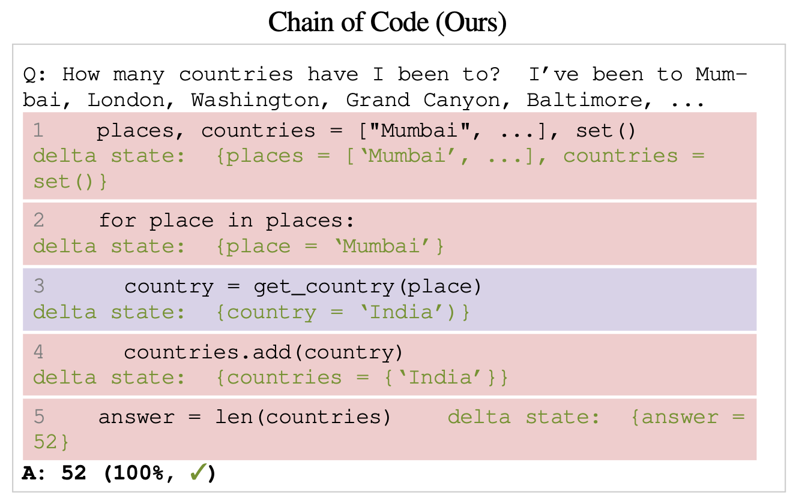
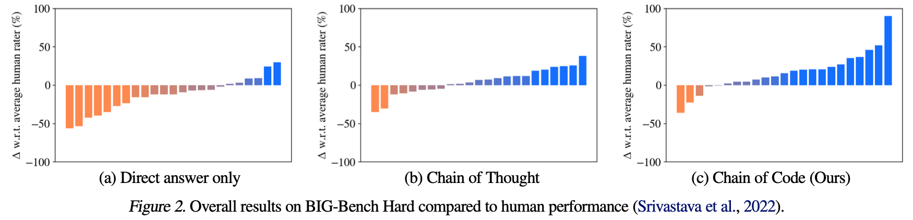
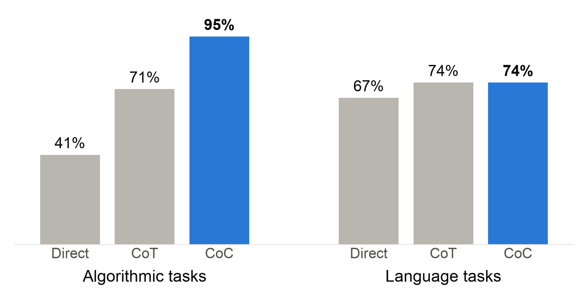
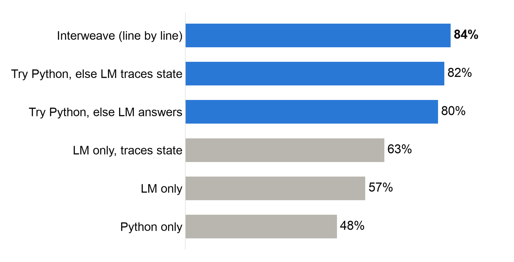
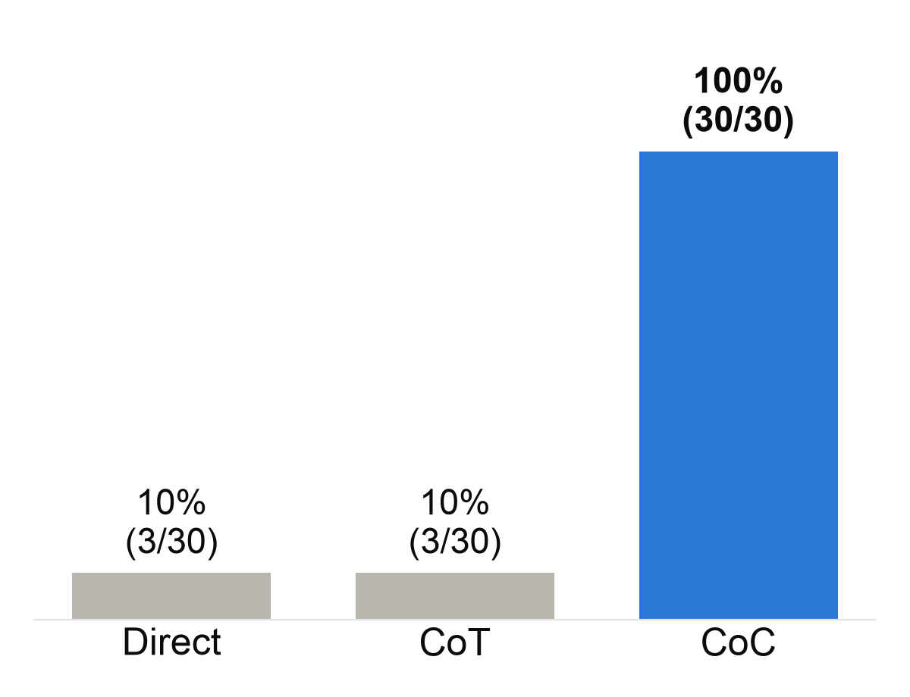
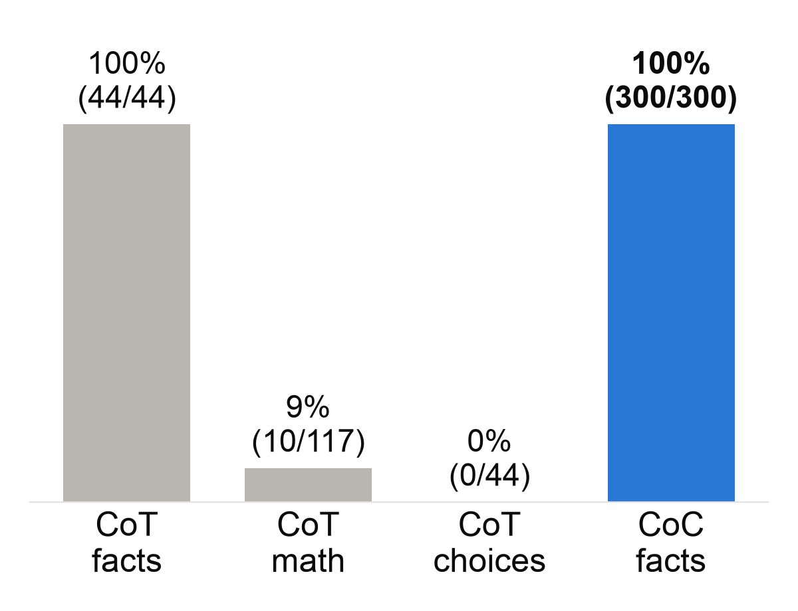

1Stanford University · 2Google DeepMind · 3UC Berkeley
International Conference on Machine Learning (ICML) 2024
Sean Murphy · October 23, 2026
In 2024, LLMs were great with language, but shaky with math.
Which is bigger: 9.11 or 9.9?
GPT-4o, Claude 3.5, Llama 3 (2024): 9.11 ✗
How many countries have I been to?
I’ve been to Mumbai, London, Washington, Grand Canyon, Baltimore, Longsheng, Guilin, Beijing, Galapagos, Quito, Barcelona, Paris, Prague, Nice, Dehli, Agra, Rome, Florence, Amalfi, Athens, Míkonos, Málaga, Monaco, Berlin, Munich, Innsbruck, Bern, Milan, Lucerne, Gimmelwald (Schilthornbahn), St Moritz, St Petersburg, Helsinki, Amsterdam, Gdańsk, Vancouver, Anchorage, Montreal, Belize, The Bahamas, Jamaica, Hawaii, Acadia National Park, Stockholm, Copenhagen, Dover, Lyon, Madrid, Toulouse, Santorini, Oslo, Kusadasi, Souda, Rhodes, Tallinn, Venice, Naples, Cape Town, Johannesburg, Addis Abeba, Nairobi, Seattle, San Francisco, Chicago, St Louis, Memphis, Chinle, Stanford, New York, Philadelphia, Boston, Miami, New Orleans, Walt Disney World Resort, Jacksonville, Las Vegas, Los Angeles, Portland, Salt Lake City, Tahoe City, Phoenix, Albuquerque, Cleveland, Charlottesville, Nags Head, Newfoundland and Labrador, Burlington, Wilmington, Myrtle Beach, St Lucia, Barbados, Banff, Haiti, Montego Bay, Sao Palo, Rio, Lima, Cusco, Cozumel, Amarillo, Yosemite National Park, Joshua Tree, Zion National Park, Bryce Canyon National Park, Grand Teton National Park, Yellowstone National Park, Glacier National Park, Mount Hood, Paso Robles, San Diego, Bend, North Cascades National Park, Olympic National Park Visitor Center, Jasper National Park, Sequoia National Park, Kings Canyon National Park, Shasta National Forest, Mount Saint Helens, Mount Rainier, Austin, Buenos Aires, El Calafate, El Chaltén, Fitz Roy, Torres del Paine National Park, Puerto Natales, Puerto Varas, Santiago, Marble Caves, Cerro Castillo, Coyhaique, Singapore, Casablanca, Marrakesh, Cairo, Jerusalem, Tokyo, Kyoto Prefecture, Taipei City, Taichung City, Krk, Naturpark Puez-Geisler, Ljubljana, Plitvice Lakes National Park, Fairbanks, Juneau, Dallas, Sydney, Cairns, Brisbane, Hook Island, Charleston, Panama City, Bangkok, Chiang Mai, Bengaluru, Denver, Indianapolis, Nashville, Blacksburg, Lisbon, Porto, Estes Park, Coeur d’Alene, Hood River, Denali, Sitka, Mexico City, Warsaw, Geneva, Auckland, Queenstown, Whitefish, Minneapolis, Sioux Falls, Bozeman, Missoula, Springfield, Skye, Edinburgh, Honolulu, Kauai, Haleakalā National Park, Wrangell-St. Elias National Park & Preserve, Atlanta, Tirana, Corfu, Siena.




BIG-Bench Hard: 23 tasks that are hard for LLMs. Examples:


Of the birthdays of Banting, Curie, Darwin, Einstein, Gauss, Hawking, Lovelace, Rutherford, Tesla, and Turing that are at least 100 days before or after 15 March 2027, whose is closest?
Qwen2.5-Coder 7B (base model) on a laptop · three worked examples per method
Correct answers, 30 random dates

Steps correct: facts vs. math

Li, C., Liang, J., Zeng, A., Chen, X., Hausman, K., Sadigh, D., Levine, S., Fei-Fei, L., Xia, F., & Ichter, B. (2024). Chain of Code: Reasoning with a Language Model-Augmented Code Emulator. Proceedings of the 41st International Conference on Machine Learning (ICML), PMLR 235.
Suzgun, M., Scales, N., Schärli, N., Gehrmann, S., et al. (2022). Challenging BIG-Bench Tasks and Whether Chain-of-Thought Can Solve Them. arXiv:2210.09261. https://arxiv.org/abs/2210.09261
Hui, B., Yang, J., Cui, Z., Yang, J., et al. (2024). Qwen2.5-Coder Technical Report. arXiv:2409.12186. https://arxiv.org/abs/2409.12186
Demo model: qwen2.5-coder:7b-base via Ollama, https://ollama.com/library/qwen2.5-coder
Fan, J. (2024, July 25). Post on X about frontier models failing “9.11 vs 9.9”. https://x.com/DrJimFan/status/1816521330298356181